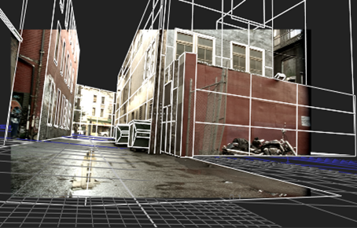

有两种方法来贴图的 ModelBuilder 款 Nuke :
• 如果 3D 模型与原始 2D 素材非常匹配，则可以将 2D 素材投影到几何图形上。请参阅 将纹理投影到形状上 .
|  |
| 将原始 2D 镜头投影到几何图形上。 |
• 如果您在 2D 素材的顶部添加了新对象 (例如，在建筑物或街道旁边添加了一个新窗口或额外的垃圾箱), 你不能在这些物体上投影你的 2D 镜头，因为它们从来没有出现在原始镜头中。相反，您需要从其他地方提供纹理，并将其映射到 3D 对象的表面。请参阅 UV 展开 .
|
|
| 单独纹理添加的立方体对象。 |
|
|